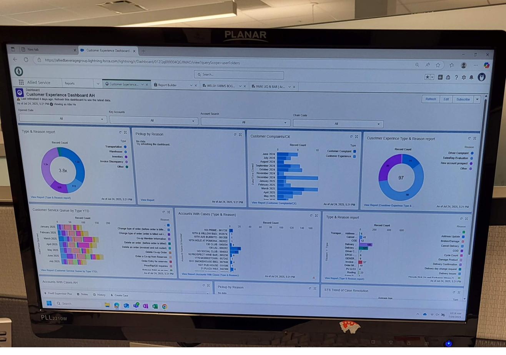
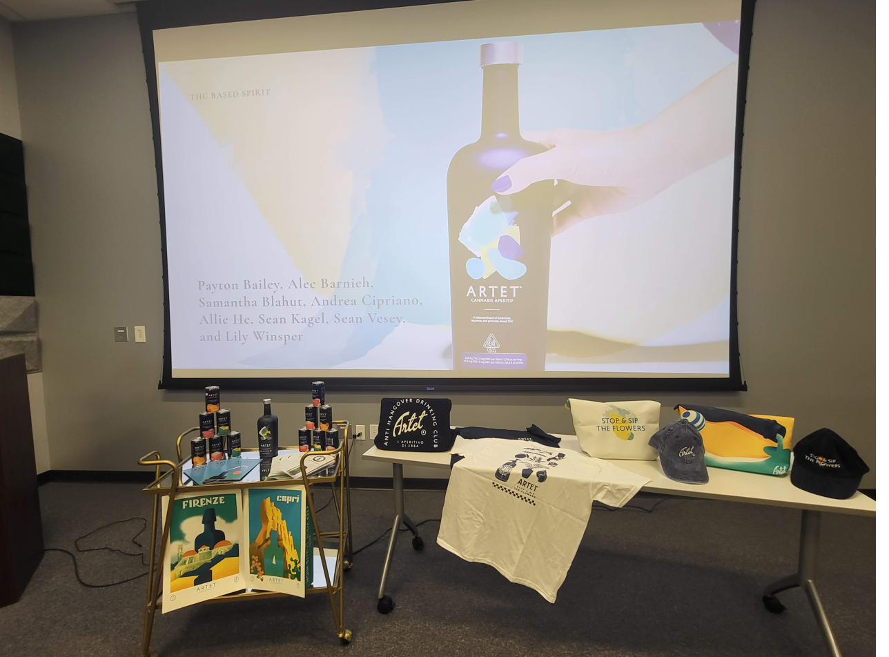
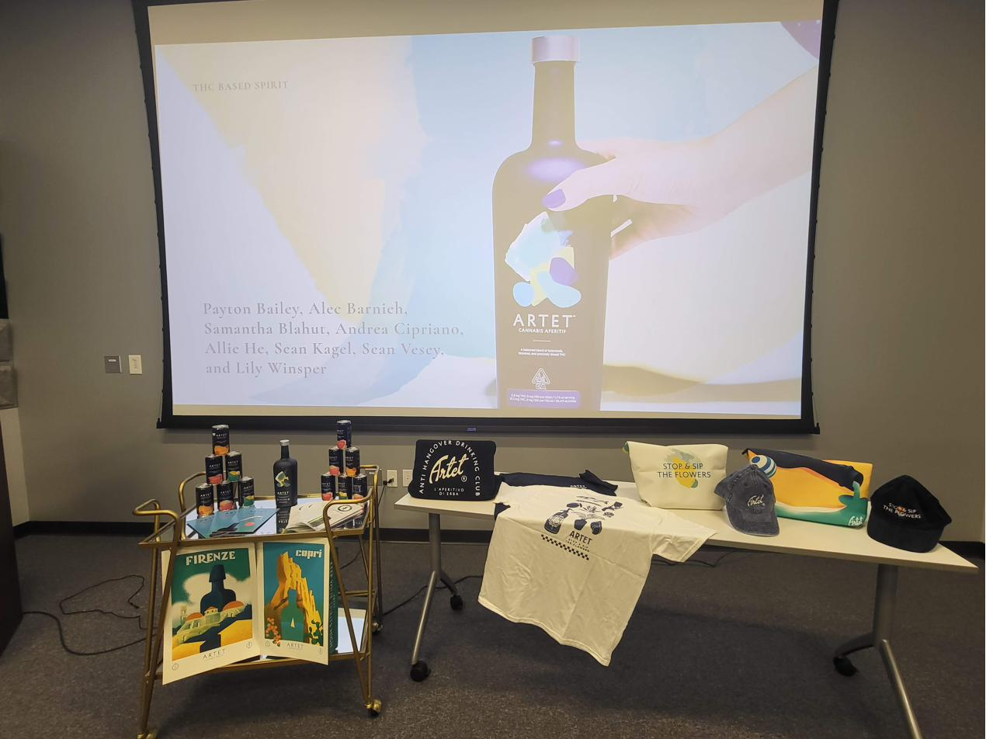
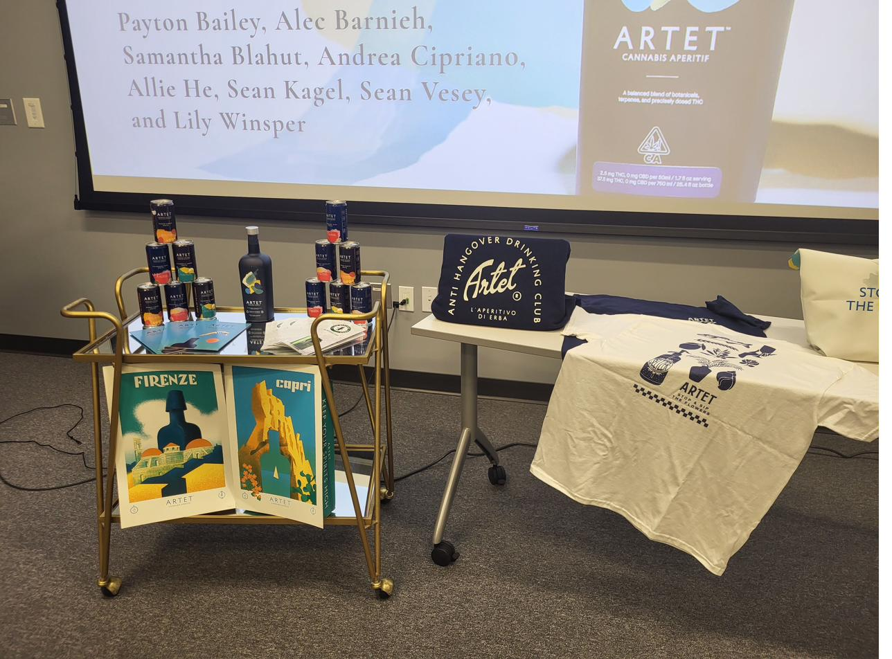
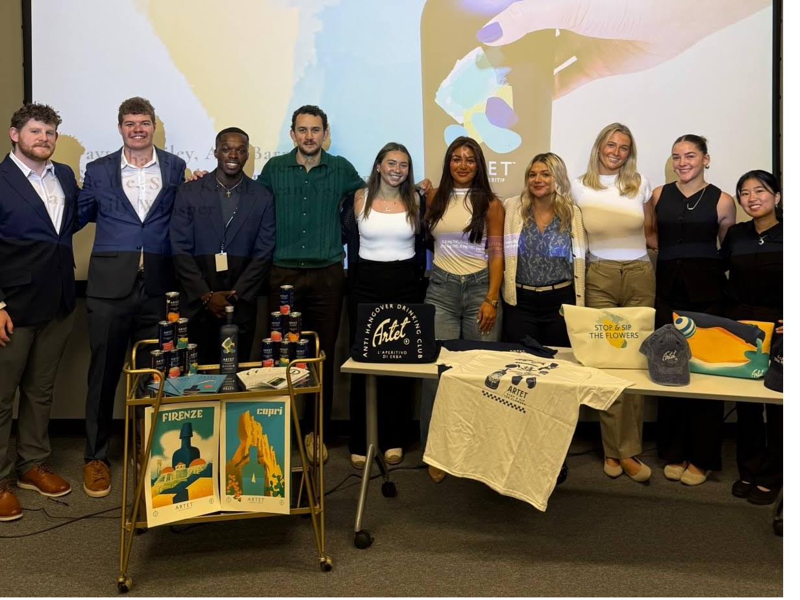

Three customer experience projects over one summer: a delivery exception analytics dashboard, a Salesforce CRM scorecard for 1,000+ accounts, and a brand design sprint for a $1M+ product launch.
Project 01
Allied Beverage had a delivery exception problem. Hundreds of exceptions — missed deliveries, wrong quantities, wrong items — were being logged daily with no centralized way to spot patterns, assign accountability, or predict which accounts were likely to escalate.
The Design
I designed a dashboard in Diver (Allied's analytics platform) using heatmap tiles organized by territory and account. Color-coded alerts flagged exceptions by severity and recurrence. The key innovation: a projected monthly savings calculation tied to exception resolution rate.
The dashboard made a previously invisible problem visible. What had been a reactive process — handling complaints as they came in — became a proactive one: account managers could see which territories were trending toward exceptions before they escalated.
Project 02
Allied Beverage serves 1,000+ accounts across New Jersey. No single view existed for leadership to assess customer health at a glance. Sales, fulfillment, billing, and logistics data lived in separate systems — no one had the full picture.
Research
I spent the first two weeks conducting stakeholder interviews across Revenue, Fill Rate, On-Time Delivery, and Invoice Discrepancy teams. Each department had different definitions of "customer health." My job: find the shared signal.
The result: a four-metric scorecard per account — Revenue trend, Fill Rate, On-Time Delivery %, and Invoice Discrepancy rate — surfaced in Salesforce CRM so sales reps could see it during account calls.

The Salesforce CX Dashboard live in the CRM — a customer scorecard surfacing four health metrics per account.
Impact
Project 03
Allied Beverage was launching Artet, a premium bar cart brand, into the NJ market. The projected launch value: $1M+. My role: UX research and customer insight to support the brand design sprint and launch strategy.
Research
I analyzed 68 customer complaint cases to understand what resolution patterns drove revenue retention vs. revenue loss. The finding was counterintuitive:
This research directly informed Artet's customer service playbook and improved complaint resolution efficiency by 18%. The insight: it's almost always cheaper to fulfill a complaint request than to lose the account.



Artet brand launch presentation — Allied Beverage's premium bar cart entering the NJ market.

The Artet launch team.
Reflection
Three parallel projects in 10 weeks is a lot. What I learned: prioritize by stakeholder impact, not by what interests you most. The Diver Dashboard was technically interesting; the complaint analysis was the one leadership cited in my final review.
I also learned that dashboards are political objects, not just design objects. Every data point you surface belongs to someone's team and affects someone's performance review. Good dashboard design means understanding that context — and designing for the stakeholder who needs the truth, not the one who controls the data.